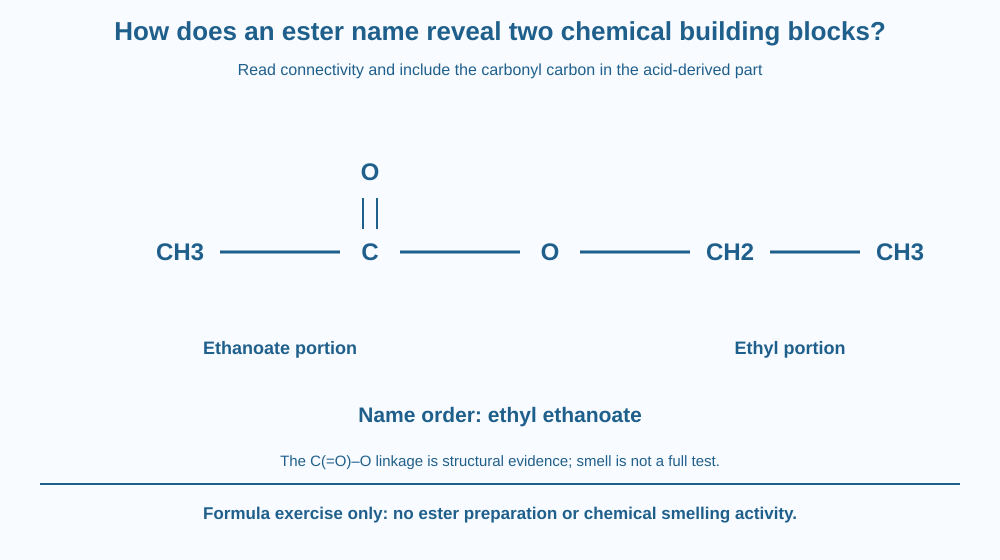

Read a simple ester name by identifying its alcohol-derived and acid-derived parts. Locate the COO linkage in a structural formula and connect it with the naming order. Distinguish structural identification from guessing a substance by smell or attempting a chemical preparation.
The name ethyl ethanoate seems to contain two related but different pieces. Each points to part of the molecule's structure. Once the linkage is located, the naming pattern becomes more informative than a long word to memorise.
An ester can be related conceptually to an alcohol and a carboxylic acid, but that does not mean a bottle contains those two liquids simply mixed together. The product has a distinct bonding arrangement.
The useful question is which atoms belong to each structural part and how the name records that connection.
A simple ester contains a linkage represented as R–C(=O)–O–R′. The carbonyl carbon is joined to one oxygen by a double bond and to another oxygen by a single bond. The second oxygen connects to the alcohol-derived carbon group.
For ethyl ethanoate, a condensed structural formula is CH3COOCH2CH3. The CH3COO portion is associated with the ethanoate part, while the CH2CH3 group attached through oxygen is ethyl.
The first word in this simple naming pattern identifies the alcohol-derived alkyl group. The second names the acid-derived carboxylate part, using the appropriate ate ending. The order in the name is not simply the left-to-right order in every possible drawing orientation.
An esterification account can relate an alcohol plus a carboxylic acid to an ester plus water under suitable conditions. The reaction can be reversible. We use that relationship for structure and naming, not as a home preparation instruction.
The acid's carbonyl carbon remains part of the acid-derived name. Forgetting it can make the carbon count wrong. Ethanoate therefore refers to a two-carbon acid-derived structure, not just the one-carbon CH3 group visible beside the carbonyl.
The COO sequence must be read with bonding context. The formula's arrangement matters; a list of carbon, hydrogen and oxygen totals alone is not always enough to identify the functional group. A separate later lesson addresses equal-formula structural isomers.
Some esters have familiar odours, but not all are fruity or safe to smell. Odour is not a reliable complete identification test. Chemical family membership does not establish food suitability or safe handling.
This lesson differs from acids-and-bases chemistry and soap micelles. Its target is a functional linkage and a naming relationship. We do not repeat proton neutralisation, detergent cleaning or carbon's general bonding diversity.
Draw the ester linkage in the centre and colour its two carbon-containing sides differently. Put the alcohol-derived group beside the single-bonded oxygen and the acid-derived section around the carbonyl.
Write ethyl below the first identified group and ethanoate below the second. Then assemble the name in its conventional order, even if the drawing has been rotated or reversed on the page.
Count the carbonyl carbon explicitly. The model should identify atoms through connections, not through whichever cluster looks largest. This makes the name a compact structural guide instead of a memory exercise detached from the formula.
The SVG shows CH3–C(=O)–O–CH2–CH3 with the ester linkage highlighted. Separate label zones identify the ethanoate and ethyl portions and then place the name ethyl ethanoate in order.
A small reaction-family strip connects alcohol-derived and acid-derived parts conceptually. It contains no reagent quantities, heating conditions or apparatus.
The diagram's colours identify structural roles, not real molecular colours. The caption states that smell and a molecular atom-total formula alone do not provide a complete identification method.

Ester names appear in chemistry descriptions and product ingredient lists, but their actual uses and hazards depend on the substance. A familiar scent association should not replace the full chemical identity.
An Indian classroom can practise the naming pattern with printed formulas. This gives a specific skill without bringing solvents or concentrated acids into a home activity.
Do not mix alcohols and acids, heat a solution or smell an unknown liquid to test the lesson. The structural relationship is sufficient for the learning goal and does not require an esterification experiment.
Use paper and two colours.
Ask a partner to count carbons in each named part and explain the linkage. This is a formula exercise, not chemical handling. Keep the same structure when turning the page so the name does not accidentally change with drawing orientation.
Why does rotating the structural drawing not change the compound's name? Distinguish spatial presentation from the connections between atoms.
Now remove the carbonyl double-bond marker from the drawing. What important structural information has been lost? The shorthand COO is useful only when the relevant bonding arrangement is understood.
Which linkage identifies the simple ester model?
Answer: B — The ester contains the carbonyl carbon joined through oxygen to the second carbon group.
Why does ethanoate include the carbonyl carbon?
Answer: A — The acid-derived two-carbon portion includes the carbonyl carbon as well as CH3.
A structural drawing is rotated without changing connections. What should happen to its name?
Answer: C — Changing page orientation does not change the atom connectivity.
Create a labelled ester-naming card with the linkage, two coloured structural portions, carbon counts and name order. Use ethyl ethanoate as the worked example.
Add one warning against identifying unknown substances by a fruity smell and one note distinguishing structure from a simple mixture of starting ingredients. Do not include synthesis quantities or an instruction to perform the reaction at home.
A chemical name can be a compressed map. Two words preserve information about structural origins and how groups connect, but only if the linkage is read correctly. A missing carbonyl carbon or a mistaken oxygen connection can change the interpretation even when the written word looks almost familiar.
A simple ester name places the alcohol-derived alkyl group before the acid-derived ate part; the C(=O)–O linkage identifies how the two structural regions connect.